Превенторы, шаровые краны и клапаны для бурения и ремонта скважин
Завод СибБурМаш проектирует и производит оборудование для промышленных, нефтегазодобывающих, буровых и сервисных компаний России и стран ближнего зарубежья.
- Отдел маркетинга и коммерции
- +7 (3452) 47-25-80 · +7 922 265-1111
- Пн–Пт 08:00–17:00
- omik@zavodgrom.ru

Каталог по категориям
Восемь направлений, как в каталоге завода. Изделия, которых нет в списке, изготавливаем по техническому заданию заказчика.
Противовыбросовое оборудование
8 изделий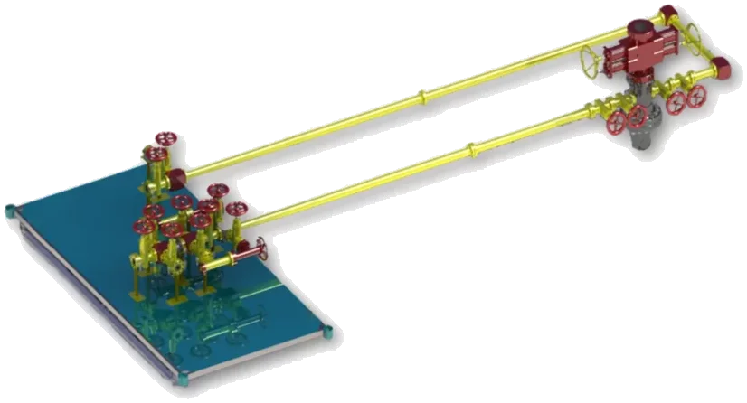
Оборудование противовыбросовое с блоками глушения и дросселирования Превентор плашечный с ручным приводом ПП2-160х21Шв разборе
Превентор плашечный с ручным приводом ПП2-160х21Шв разборе Превентор кабельный ПК1-156х21в разборе
Превентор кабельный ПК1-156х21в разборе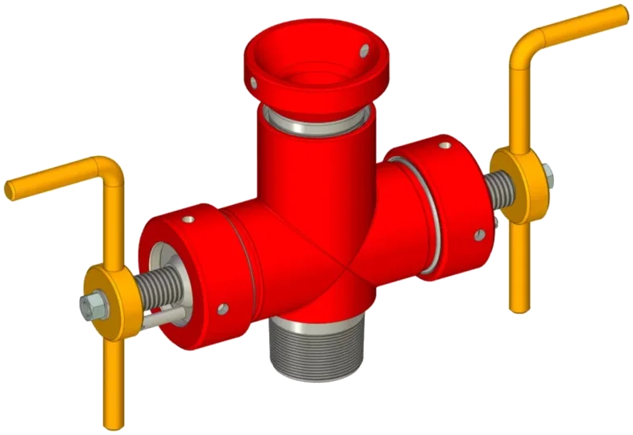
Превенторы малогабаритные штанговые ПМШв разборе Превентор плашечный гидравлический ППГ2.2-160х35
Превентор плашечный гидравлический ППГ2.2-160х35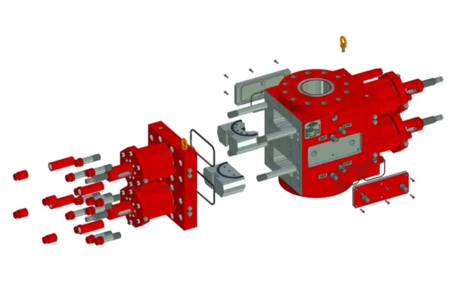
Превентор плашечный гидравлический ППГ2-180х70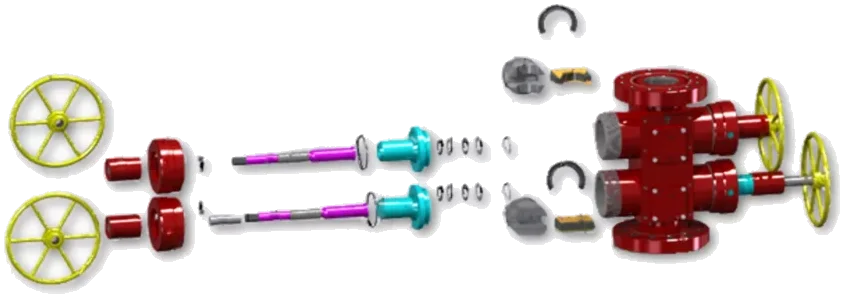
Превенторы малогабаритные серии ПМТ (ПМТ2)-125 (156)х21 Превенторы плашечные серии ПП (ПП2)-160 (180)х21 (35)
Превенторы плашечные серии ПП (ПП2)-160 (180)х21 (35)
-
Краны шаровые для верхнего силового привода (ВСП)
2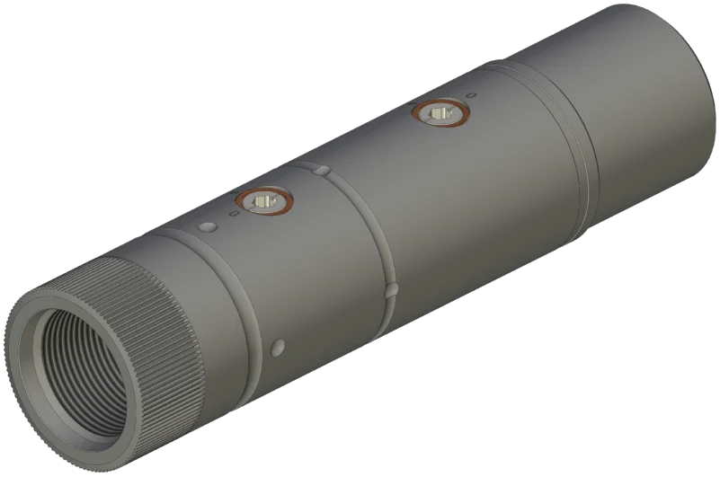
-
Краны шаровые и клапана обратные под колонны труб
3 -
Клапана циркуляционные
1
-
Краны трубопроводные
1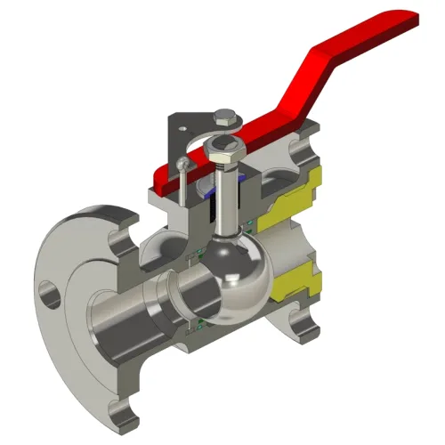
-
Оборудование для цементирования скважин
2 -
Технологическое оборудование для бурения и ремонта скважин
1
-
Изготовление продукции по индивидуальным техническим заданиям
Конструкторское и технологическое подразделения проектируют новые изделия и модернизируют серийные. Пришлите ТЗ — рассчитаем изготовление.
Отправить ТЗ
Изделие в разборе
Превентор плашечный с ручным приводом ПП2-160х21Ш
- Назначение
- Герметизация устья скважины со спущенной колонной труб плашками под различный диаметр и без колонны — шибером
- Диаметр НКТ
- 33; 48; 60; 73; 89; 102 и 114 мм
- Конструкция
- Шибер даёт небольшие габариты и вес превентора: экономит место и упрощает монтаж. Можно ставить различные технологические вставки
Превентор кабельный ПК1-156х21
- Назначение
- Герметизация на устье скважины геофизического кабеля при перфорации и геофизических работах
- Диаметр кабеля
- 6,3; 9; 10,4; 11; 11,9; 12,5; 13,5; 16 мм и глухие
- Конструкция
- Присоединение фланцевое. Герметизатор разъёмный ГКР1-156х21 позволяет быстро сменить элементы на другой типоразмер без демонтажа корпуса
Превенторы малогабаритные штанговые ПМШ
- Назначение
- Герметизация геофизического кабеля, насосных штанг и полированного штока при аварийных и ремонтных работах
- Диаметр штанг
- 16; 19; 22; 25; 32 (31) мм и глухие; разбег плашек 16–19, 19–25, 25–31 мм
- Диаметр кабеля
- 3; 6; 9; 11; 15 мм
- Привод
- Ручной. Малые габариты и небольшой вес
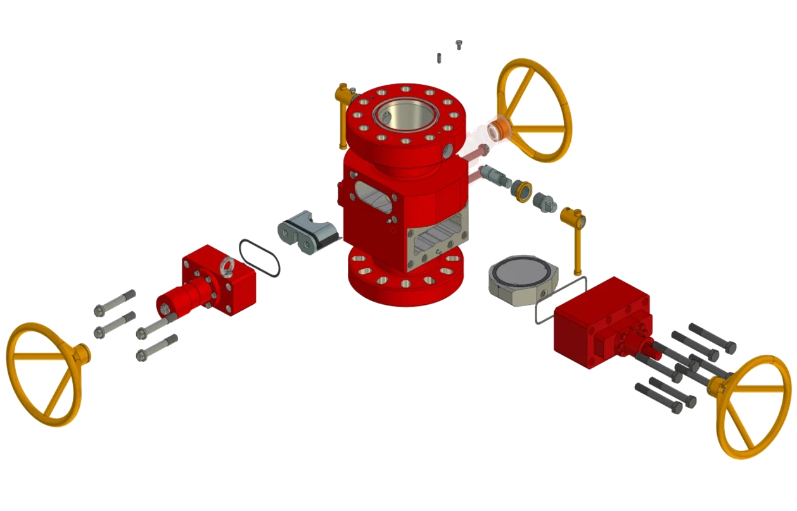

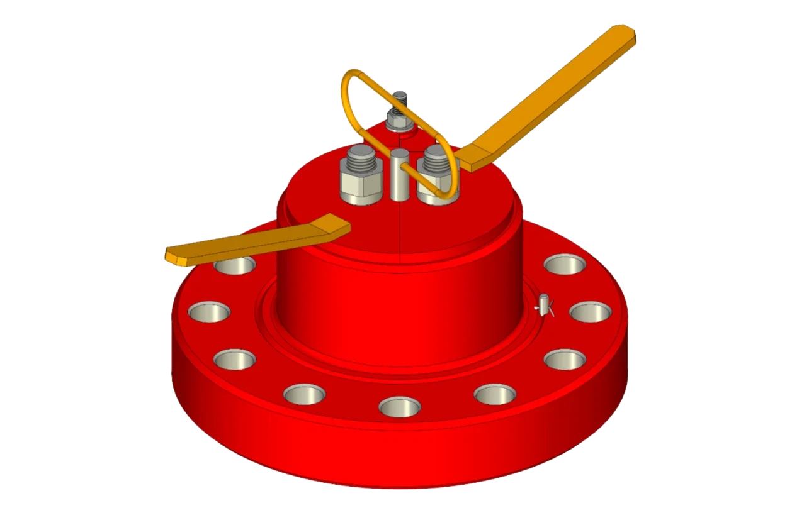
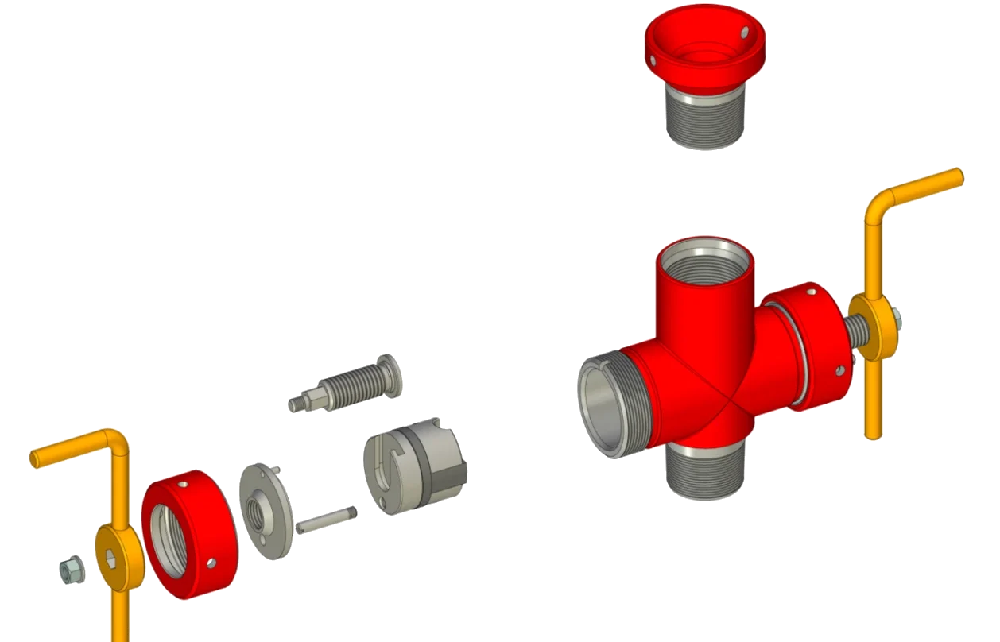
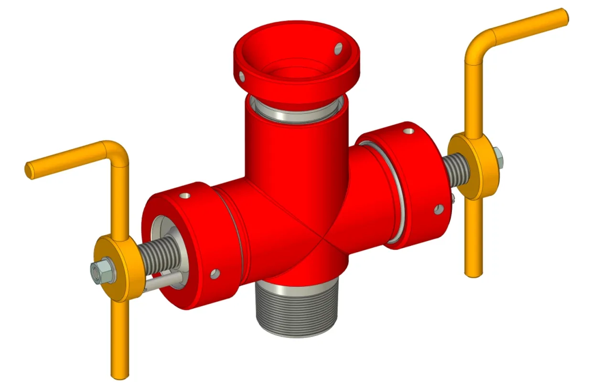
3D-модели завода СибБурМаш
Завод с 1979 года
ООО «Завод СибБурМаш» входит в группу компаний «СибБурМаш», которая разрабатывает, производит и сопровождает оборудование для строительства скважин, их заканчивания и эксплуатации.
- ≥ 3
- новых изделия выпускаем ежегодно
- 10
- серийных изделий модернизируем каждый год
- 105 МПа
- испытательное давление после модернизации испытательного оборудования
- Ø 950 мм
- наружный диаметр деталей на токарных центрах с ЧПУ
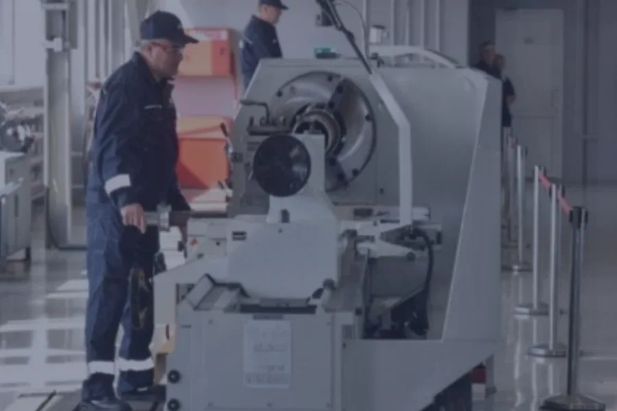


Парк станков после модернизации 2015 года
- 14единиц станочного оборудования прошли капитальный ремонт и модернизацию
- 7токарно-обрабатывающих центров с ЧПУ: детали наружным диаметром до 950 мм и длиной до 1500 мм
- 2фрезерно-обрабатывающих центра с ЧПУ: детали весом до 4 т и размерами 2200 × 1000 мм
- 1сферошлифовальный станок: наружная и внутренняя сфера на шарах и сёдлах кранов ВСП с уплотнением металл — металл
- +установка лазерной резки листа и трубных заготовок
- 1979Основан завод: превенторы, герметизирующие устройства, шаровые краны для бурения и эксплуатации скважин
- 1992Статус завода в составе Министерства природных ресурсов; через два года — ОАО «ГРОМ»
- 2007Система менеджмента качества, сертификат ISO 9001:2008 (TÜV NORD CERT)
- 2009Возобновлено оборудование для предупреждения и ликвидации аварий; разработан комплекс для ликвидации фонтанов
- 2015Модернизация и обновление станочного парка
- 2018Участник программы повышения производительности труда Тюменской области
- 2022ООО «ГРОМ» переименовано в ООО «Завод СибБурМаш»
Как работаем
- Аналоги вместо импорта
Импортозамещение
Разрабатываем и выпускаем импортозамещающую продукцию. Сделаны аналоги кранов шаровых для верхнего силового привода Canrig, Bentec, Drillmec, Tesco, Varco, SLC; клапан КЦ-102/31.121 — аналог PBL.
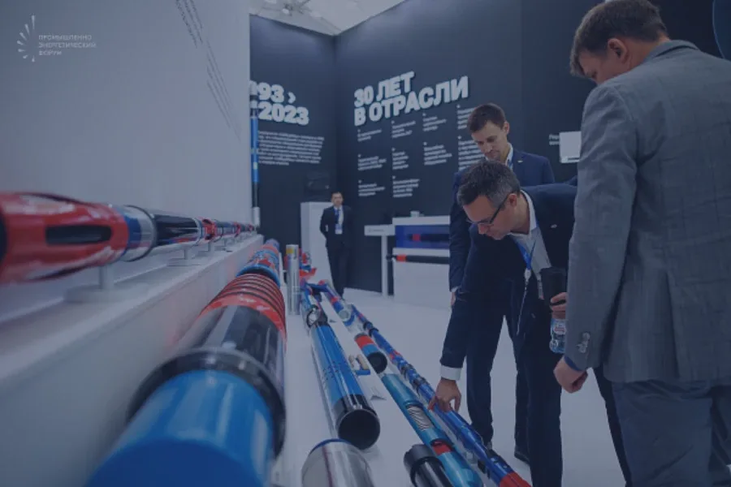
НИОКР и опытно-промышленные испытания
Участвуем в научно-исследовательских, опытно-конструкторских работах и ОПИ.

Своё конструкторское бюро
Проектируем новые виды продукции и модернизируем серийные, изготавливаем по техническому заданию.
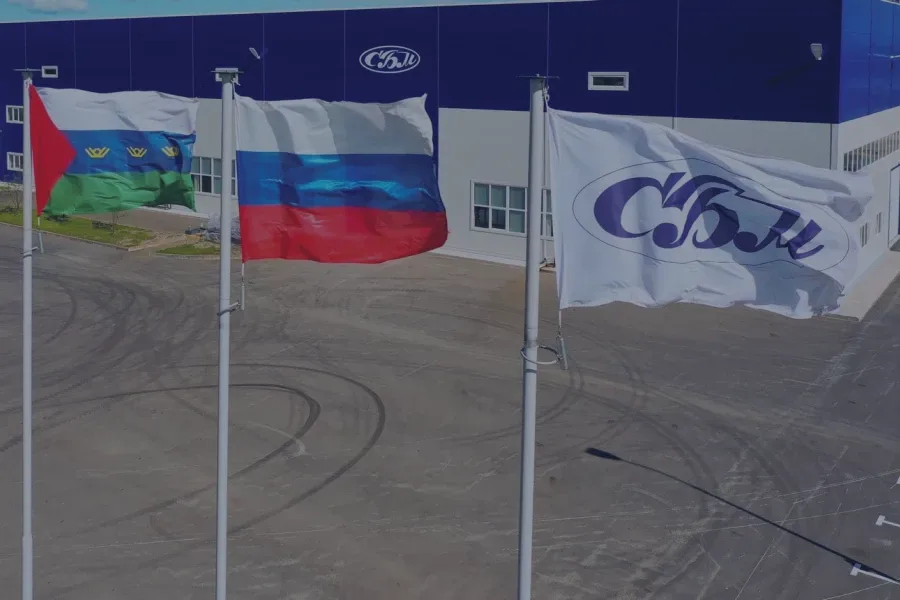
Контроль и логистика
Контроль качества на всех этапах и выходной контроль отгружаемого оборудования. Обработка сопрягаемых поверхностей — до показателей импортных аналогов и выше. Удобное расположение к крупным нефтегазовым предприятиям.
Сертификаты ISO 9001 (IAF, БГЦА) на русском и английском — на сайте завода
Запрос коммерческого предложения
Укажите изделие и количество или приложите описание ТЗ. Отдел маркетинга и коммерции ответит по телефону или почте.
Контакты
Адрес
625031, г. Тюмень, ул. Дружбы, д. 130
Пн–Пт 08:00–17:00, перерыв 12:00–13:00